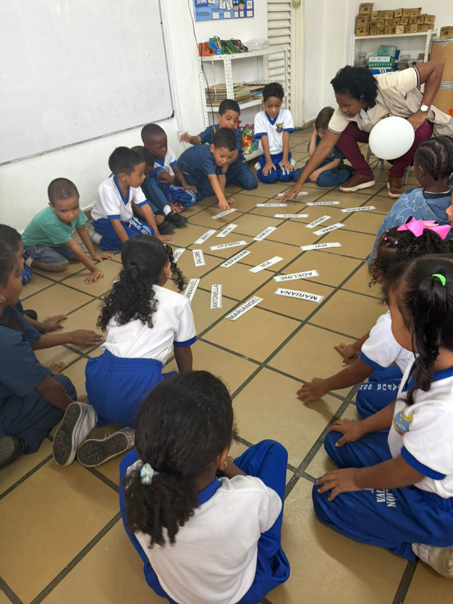

Exploración, juego y reconocimiento del lenguaje
Los niños manipularon fichas y bloques de manera libre, construyendo formas y evidenciando un ambiente activo, participativo y de aprendizaje tanto individual como grupal.
Se realizaron actividades como el juego “tingo tango” para reconocer el nombre propio, además de momentos de rutina como oración y canto, generando disposición y motivación.
Se observó resolución de conflictos mediante el diálogo guiado por la docente, promoviendo el respeto, la convivencia y la interacción social entre los estudiantes.

Esta experiencia permitió reconocer que cada momento en el aula es una oportunidad de aprendizaje. El juego, la rutina y la mediación del docente favorecen procesos significativos. Además, el manejo de conflictos desde el diálogo fortalece una enseñanza más humana y cercana.
Desde Jean Piaget, el aprendizaje se construye a través de la interacción con el entorno. Asimismo, Jerome Bruner plantea que el aprendizaje es un proceso activo donde el estudiante construye conocimiento a partir de experiencias previas, lo cual se evidencia en el uso del juego como estrategia pedagógica.